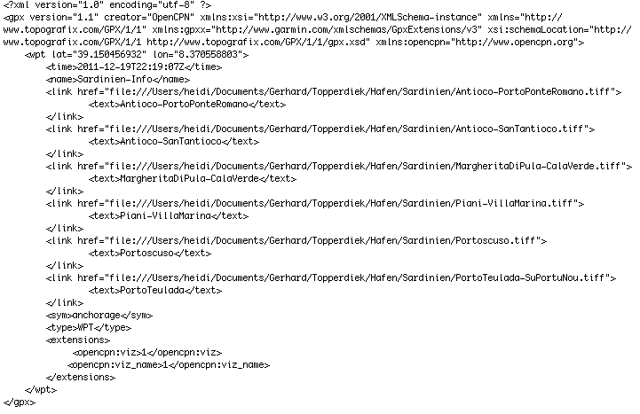

Anhang
Abkürzungen
Einige Erläuterungen zu oft verwendeten Abkürzungen.
Übersetzungen
Erster Versuch nautischer Übersetzungen.
Wie verwendet man Layer?
Eine Schritt-für-Schritt Anleitung zur Erweiterung von OpenCPN mit persönlichen Daten.
Windstärken
Informationen zu Windstärken.
Kleine Helferlein
Hier soll eine Sammlung kleiner Hilfen entstehen.
Abkürzungen
Viele Abkürzungen basieren auf anglo-amerikanischen Normen wie NMEA oder anderen englisch-sprachigen Begriffen. Daher hier eine kleine Zusammenstellung ohne Anspruch auf Vollständigkeit, z.B. sollte das internationale (Funk-)Buchstabier-Alphabet an anderer Stelle zu finden sein.
| Abkzg. | englisch | Erläuterung |
|---|---|---|
| AWA | Apparent Wind Angle | Winkel des scheinbaren Winds zu einem fahrenden Schiff in dessen Längsachse |
| AVS | Average Boat Speed through Water | Durchnitsgeschw. durchs Wasser (Trip Log) |
| AWS | Apparent Wind Speed | Windgeschwindigkeit relativ zum Boot, gemessen mit dem bordeigenen Instrument |
| BS | Boat Speed | Geschwindigkeit des Bootes durchs Wasser |
| BSP | Boat Speed | Geschwindigkeit des Bootes durchs Wasser |
| BTN | Bearing To Next | Kompaßkurs zum nächsten Wegpunkt der Route |
| BTW | Bearing To Waypoint | Kompaßkurs zum nächsten Wegpunkt |
| BWTW | Bearing Waypoint To Waypoint | Kompaßkurs von Wegpunkt zu Wegpunkt |
| CAPE | Convective Available Potential Energie | Maß für die zur Konvektion (vertikale Luftmassenbewegung) zur Verfügung stehende Energie (J/kg) |
| CD | Current Direction | Strömungs-Richtung |
| Clipboard | Clipboard | Zwischenablage (im Speicher) |
| CNM | Course to Next Mark | Kurs zum nächsten Wegpunkt |
| COG | Course Over Ground | Kurs eines Schiffes relativ zum Land (über Grund) |
| CPA | Closest Point of Approach | Ort der dichtesten Annäherung |
| CRS | Course | Kompaß-Richtung des Bootes durchs Wasser |
| CS | Current Speed | Strömungs-Geschwindigkeit |
| DBK | Deepth Below Keel | Wassertiefe gemessen von unterstem Punkt des Kiels |
| DBS | Deepth Below Surface | Wassertiefe gemessen von Wasseroberfläche oder Wasserlinie des Schiffs |
| DBT | Deepth Below Transducer | Wassertiefe gemessen vom Geber (Schwinger) unter dem Schiff, nicht justiert |
| DFT | Current Drift | Strömungsgeschwindigkeit in Knoten |
| DNM | Distance to Next Mark | Entfernung zum nächsten Wegpunkt |
| DR | Dead Reckoning | Bestimmung einer Position durch Kopplung von Kurs/Geschw. von einer vorherigen bekannten Position aus. DR Position ist nur eine ungefähre Position. |
| DTD | Distance To Destination | Entfernung zum Zielendpunkt, evtl. auch Gesamtentfernung einer Route mit mehreren Wegpunkten |
| DTN | Distance To Next | Entfernung zum nächsten Wegpunkt auf der Route |
| ECDIS | Electronic Chart Display + Information System | Computer-basiertes Navigations-Informationssystem nach Richtlinien der IMO (International Maritime Organization). |
| ENC | Electronic Navigational Chart | Elektronische Navigationskarte |
| ETA | Expected Time of Arrival | Erwartete Ankunftszeit |
| ETAD | Expected Time of Arrival at Destination | Erwartete Ankunftszeit am Endziel |
| ETAN | Expected Time of Arrival to Next | Erwartete Ankunftszeit am nächsten Wegpunkt |
| ETED | Expected Time Enroute to Destination | Erwartete Reisezeit zum Ziel |
| ETEN | Expected Time Enroute to Next | Erwartete Reisezeit zum nächsten Wegpunkt |
| ETS | Expected Time of Sailing | Erwartete Abfahrtszeit |
| GWD | Ground Wind Direction | Kompaß-Richtung aus der der Wind über der Erde weht (siehe auch TWD) |
| GWS | Ground Wind Speed | Windgeschwindigkeit in Knoten über der Erde (siehe auch TWS) |
| HDG | Heading | Kompaß-Richtung in die der Schiffsbug weist |
| HDM | Heading Magnetic | wie HDG aber magnetisch |
| HDT | Heading True | wie HDG aber wahr |
| HEL | Heel | Winkel der Backbord oder Steuerbord Inklination des Bootes |
| Layline | Layline | Theoretische Kurslinie bei konstanten Bedingungen |
| Leeway | Leeway | Winkel zwischen HDG und CRS. Leeway = -1 * k * Heel / BSP^2 wobei k Boots-spezifisch ist |
| LMT | Local Mean Time | Lokale Ortszeit |
| LOG | Log | Gemessene zurückgelegte Entfernung |
| MOB | Man Over Board | Mann über Bord |
| POI | Point Of Interest | Markierung, Wegpunkt |
| POS | Boat Position | Boots Position |
| RDA | Rudder Angle | Ruder-Winkel |
| ROT | Rate Of Turn | Drehrate |
| ROUTE | Route | Weg oder Passage von einem Punkt zum nächsten. Routen können mehrere Wegpunkte umfassen. Abschnitte zwischen Wegpunkten werden Legs genannt. |
| SDA | Set and Drift Angle | Eingabe- und Driftwinkel, verwendet in einem kombinierten Instrument |
| SDD | Set and Drift Direction | Eingabe- und Driftrichtung, verwendet in einem kombinierten Instrument |
| SET | Current Set | Kompaß-Richtung in die die Tide läuft |
| SOG | Speed Over Ground | Geschwindigkeit eines Schiffes relativ zum Land (über Grund) |
| STW | Speed Through Water | Geschwindigkeit durch Wasser (NMEA-fähiger Speedsensor am Boot erforderlich) |
| TCPA | Time to Closest Point of Approach | Zeitdauer bis zur dichtesten Annäherung |
| Track | Track | Zurückgelegte und gespeicherte Fahrtstrecke |
| TTD | Tacking Time to Destination | Vorausberechnung der Zeit bis zu einem Ziel mit Berücksichtigung der Umgebungsbedingungen (z.B. Kreuzen) |
| TTG | Time To Go | Verbleibende Zeit bis zum Ziel |
| TWA | True Wind Angle | Winkel des wahren Windes relativ zur Schiffs-Längsachse |
| TWD | True Wind Direction | Kompaß-Richtung aus der der wahre Wind kommt |
| TWS | True Wind Speed | Windgescheindigkeit relativ zu einem stationären Punkt |
| VMC | Velocity Made on Course | Geschwindigkeit zu einem aktiven Wegpunkt |
| VMG | Velocity Made Good | Geschwindigkeit des Schiffes zum Ziel, gemessen auf einer Linie vom Schiff zum Ziel |
| VTW | Velocity Through Water | Geschwindigkeit des Schiffes durchs Wasser |
| WP | Way Point | Wegpunkt |
| XTE | Cross Track Error | Kürzeste Entfernung von der Schiffsposition zur nächsten Routenlinie |
Einige Abkürzungen können ein hinten angestelltes "M" haben zur Bezeichnung als "magnetisch", z.B. HDGM statt nur HDG. Ohne "M" ist der wahre Kurs gemeint.
Für einige englische Abkürzungen werden auch deutsche Abkürzungen verwendet. Da diese oftmals nicht einheitlich sind, kann es zu Mißverständnissen
führen.
Übersetzungen
Der Beginn einer nautischen Übersetzungsbibliothek. Die Gastgeber sind dankbar, wenn man sich bemüht, ihre Sprache zu sprechen.
| de | en | fr | nl | dk | es | it | pt | tr | gr | pl | hr | ru | se | no | fi | lv | hu | sk | cz | si |
|---|---|---|---|---|---|---|---|---|---|---|---|---|---|---|---|---|---|---|---|---|
| (auf)fieren | slack off | choquer | vieren | lade ga | ammollar | allentare | folgar | halati laska etmek (halaté laschka) | luzowac | |||||||||||
| abfendern | fender off | écarter | afhouden | fendre af | abrir el bote del costado | scostare | por as defensas | kanca tutmak | avararo | |||||||||||
| Achterstag | preventer, backstay | étai arrière | achterstag | fats bagstag | poparras | paterazzo | brandal fixo da popa | kontra kic itralya (k-ech estralia) | epitonos-vardria | achtersztag | ||||||||||
| Adresse | adress | adresse | adres | adresse | direccion | indirizzo | morada | adres | di-ifinis | adres | ||||||||||
| Anker | anchor | ancre | anker | anker | ancla | ancora | ancora/ferro | demir | áchkira | kotwica | ||||||||||
| Anker aufholen | to weigh the anchor | appareillage | anker inhalen, hal in anker | lette anker | levar el ancla | levare l´ancora | suspender a amarra | demir almak | sikono achkira | wybrać kotwice | ||||||||||
| Anker ausbrechen | break out the anchor | dècrocher, dèraper l´ancre | een anker losbreken | at braekke ankeret los | desatrincar | spedare una ancora | arrancar o ferro | salpa demir | wyrwac kotwice | |||||||||||
| Anker fallen lassen | drop the anchor | jeter l´ancre | laat vallen anker | lade ga | fondear el ancla | gettare | largar o ferro | demir atmak | richno tin achkira | rzucic kotwice | ||||||||||
| Anker schliert, schleift | dragging anchor | chasser sur l´ancre | krabbend anker | ankeret holder ikke | ancla garreando | ancora che ara | ferro arragar | demir tariyor | achkyra pou xeserni | przeciagnac, wlec kotwice | ||||||||||
| Anker unklar | fouled anchor | l´ancre surjalée | onklaar anker | ankeret fisker | ancla encepada | ancora impigliata | ferro preso | demir dolasmasi (dolaschmase) | berdemeni achkyra | splątany łańcuch kotwiczny | ||||||||||
| Ankerleine | anchor warp | aussiere | ankerketting | ankertrosse | cabo del ancla | gomena per ancora | cabo de ferro | demir halati | ankiróschino | lina kotwiczna | ||||||||||
| auf Deck | on deck | en pont | on dek | daek | en cubierta | al ponte | convez | güverte | katastroma | na pokład | ||||||||||
| backbord | portside | babord | bakboord | bagbord | babor | sinistra | bombordo | iskele | aristeri plira | lewa burta | ||||||||||
| Baumniederholer | downhaul | hale-bas | neerhaler | nedhaler | cargadera | caricabasso | tece do peao de retranca | mayna halati (halat-eh) | sistima chia tentoma mechistis sto katarti | |||||||||||
| Baumniederholer (fest) | rodkicker | hale-bas rigide | neerhouder | kicking rod | contra rigido | vang rigido | rodkicker | bumba baski (bask-é) kolu | strofio pont | |||||||||||
| Baumrollreff | boom roller | enrouleur de bome | giekrolrif | rulleboom | enrollador de botavara | boma a rullino | enrolador na retranca | bumba sarma düzenegi (düsene-j-i) | peristrefomeni matsa | roler w bomie | ||||||||||
| Baumstütze | gallows | supporte de bome | vang | boomstol | posa botavara | capra | descanco da retranca | bumba | stirichma matsas | |||||||||||
| Beiboot | Dinghi, inflatable | dinghi, canot | open botje | jolle | chinchorro | gommone | dingi | varkaki | bączek, ponton | |||||||||||
| Bier | beer | biere | bier/Heineken | cerveza | birra | birra (Efes) | birra (Mythos,Heineken) | piwo | pivo | pivo | ||||||||||
| Bilge | bilges | bouchain | kim | kimingen | sentina | sentina | entre fundo | sinine | sentines | zęza | ||||||||||
| Blitz | lightning strike | foudre | blikseminslag (-slach) | lynnedslag | rayo | colpo di fulmine | relampago | yildirim carpmasi (tscharpmase) | kerainos | piorun | ||||||||||
| Bolzen | bolt | boulon | bout | bolt | perno | bullone | cavilha | civata | Bouloni | przetyczka | ||||||||||
| Boot | boat | le bateau | het boot, schip | Baden | el barco | la barca | do barco | tekne | to skafos | łódź | ||||||||||
| Bootshaken | boathook | gaffe | pikhaak | badshage | bichero | gaffa | croque | bot kancasi (kantschase) | chantzos | bosak | ||||||||||
| Bootsname | boat´s name, ship´s name | nom de bateau | scheepsnaam | badenavn | nombre del barco | nome della barca | nome do barco | tekni adi (adé) | onoma skafos | nazwa jachtu | ||||||||||
| Breite | beam | largeur | breedte | bredde | manga | larghezza | bocadura | kemere | platos | szerokość | ||||||||||
| Breite der Yacht | beam of the boat | largeur de bateau | breedte van het boot | bredde bad | manga del barco | larghezza maxima della barca | boca | azami tekne emi | platos | maksymalna szerokoć jachtu | ||||||||||
| Brot | bread | pain | brood | pan | psomí | chleb | ||||||||||||||
| Bug | bow | proue | boeg | staevn | proa | prua | proa | pruva | plori | dziób | ||||||||||
| Bugspriet | bowsprit | beaupré | boegspriet | bovspryd | botalón | bompresso | civadra | bastouni | bukszpryt | |||||||||||
| Bugstrahlruder | bowthruster | propulseur d´étrave | boegschroef | bovpropel | hélice de proa | elica di prua | manevra pervanesi | propella ploris | ster strumieniowy | |||||||||||
| Bullenstander | gybe preventer | retenu de bome | bulletalie | ledereb | trapa | ritenuta del boma | contra-escota | kavanca (kavantscha) önleyici donanim (donanem) | priventer | |||||||||||
| Chartervertrag | charter party (contract) | charter-partie (contrat) | huurovereenkomst (kontrakt) | certeparti | contrato de flete | contratto de noleggio barca | fretador | kira sözlesmesi (sösleschmesi) | omada näiloseos | umowa czarteru | ||||||||||
| Cockpit / Plicht | cockpit | baignoire | Kuip | cockpit | banera | pozzetto | poco | kokpit | kokpit | kokpit | ||||||||||
| Dalben | pile | poteau | steigerpal | pael | estaca | pilone | estaca | baglama kazigi (bahlama kazeh-e) | stylos | dalba | ||||||||||
| Deck | deck | pont | dek | daek | cubierta | ponte | convés | güverte | katastroma | pokład | ||||||||||
| der Anker hält | the anchor holds | l´ancre croche | die anker houd | ankeret holder | el ancla agarrada | ancora che agguanta | ferro unhado | deminin tutmasi (tutmase) | krata-i | kotwica trzyma | ||||||||||
| Dirk | topping lift | balancine | kraanlijn | bomdirk | amatillo | amantiglio | amantilho | balancina (balantschina) | mantari epinakoxilou | |||||||||||
| Durchreisegenehmigung/Passagepapier | transit log, translog, temporary importation permit | permis d´importation temporaire | doorvoerpapieren | transitbevis midlertidig importtiladelse | permis temporal d´importatición | permesso d´importazione | licenca d´estadia | gecici (getschitschi) ithalat izni , transitlog | prosorina adia isachochis (PPMD) | transitlog | ||||||||||
| Elektrikstörung | electrical failure | panne d´électricité | elektrische storing | elektrisk fejl | fallo electrico | guasto elletrico | falha electrica | elektrik arizazi (arezasé) | ilektriki blari | awaria instalacji elektrycznej | ||||||||||
| Fahrt rückwärts machen | go astern | aller en arrière | gaa achteruit | bakke | marcha atras | andare indietro | à ré | tornistan | anapola | płynąć na wstecznym | ||||||||||
| Fahrt voraus machen | go ahed | aller en avant | gaa vooruit | ga frem | ir avante | andare avanti | à vante | ilery | proso | płynąć do przodu | ||||||||||
| Fall | halyard | drisse | val | fald | driza | drizza | adrica | mandar | mantaria | |||||||||||
| Fender | fender | défense | Fender | fender | defensa | parabordo | por as defensas | usturmaca (usturmatscha) | Baloni | odbijacz | ||||||||||
| Festmachen | make fast | frapper | vastmaken | saette fast | amarrar firme | dar volta | depressa | volta etmek, baglamak (bahlamak) | sichourio-prosdenomä | |||||||||||
| Festmachen im Päckchen | raft up | ammarrer à couple | langszij vastmaken | fortoje pa siden | amarrar de costada | far zattera con altre barche | icar a balsa | bordaya baglamak (bahlamak) | deno tp skafos se tana | |||||||||||
| Festmacherring | mooring ring | anneau d´ammarage | afmeerring | fortojningsring | argolla de amarre | anello d´ormeggio | argola de amarracao | baglama anelesi | krikos prosdisis | ucho cumownicze | ||||||||||
| Festmachetonne | buoy, mooring buoy | bouée de corps mort | meerbooi | fortojningsboje | boya de amarre | boa d´ormeggio | bólia de atracao | baglama sarandirasi(bahlama samanderase) | simadura prosdesis | boja cumownicza | ||||||||||
| Fischerboot | fishing boat | bateau de peche | vissersschip | fiskerbad | barco de pesca | pescherecchio | barco de pesca | balikci teknesi (balektsche teknese) | psaraliki varka | łódź rybacka | ||||||||||
| Flossenkiel | fin keel | quile á ailettes | vleugelkies | vingekol | orza | chiglia a pinna / a bulbo | patilhao | salma omurga | karina pterichio | kil | ||||||||||
| Fock | jib | foc | fok | fok | foque | fiocco | bujarrona | flok | flokos | fok | ||||||||||
| Fockbaum, Klüverbaum | Jib boom | foc bom | kluiverboom | klyverbom | tangocillo de foque | tangone del fiocco | retrance do estai | flok bumbasi | matsa flokou | |||||||||||
| Freibord | freeboard | franc-bord | vrijboord | fribord | franco bordo | bordo libero | altura bordo | fribord | yperkimeni epifania | wolna burta | ||||||||||
| Frischwassertank | freshwater tank | réservoir d´eau douce | drinkwatertank | ferskvandstank | depósito de agua potable | serbatoio d´acqua dolce | tanque de aguada | tatlisu tanki (tatlesu tanké) | dexameni nrou | zbiornik czystej wody | ||||||||||
| Funkschein(VHF-Schein) | radio (VHF) licence | licence radio | zendmachtiging | radiolicens | certificado radio VHF | lizenza radio | licenca de radio | telsiz kullanma ruhsati (ruhsaté) | adia radiostathmou | licencja UKF / VHF | ||||||||||
| Fähre | ferry boat | ferry | veerboot | faerge | ferry | traghetto | ferry | feribot | ferry | prom | ||||||||||
| gegenwärtige Position | present position | position actuelle | huidige positie | nuvaerende position | situación actual | posizione attuale | posicao actual | bulunulan mevkikonum | parusa thesi | aktualna pozycja | ||||||||||
| Genoasegel | genoa | génois | genua | genua | génova | genoa | genoa | cenova | tzenoa | genua | ||||||||||
| Grossschot | outhal | hale-dehors | uithaler | udhaler | envergue de puno | tesabugna | talha do punho da escota | alt yaka gergisi | sistima xia tentoma mechistis sti matsa | |||||||||||
| Großsegel | mainsail | grande-voile | grootzeil | storsejl | vela mayor | randa | vela grande | anayelken | mechisti | grot | ||||||||||
| Gutachter | surveyor | expert maritime | inspecteur | synsmand | constructor | costruttore | construtor | yapimci (yapemtsche) | kataskiastis | |||||||||||
| Hafengebühren, Liegegeld | harbour dues | droits de port | havengeld | havnepenge | derechos de puerto | diritti portuale | taxas | liman harclari (hartschlaré) | limeniko telos | oplaty portowe | ||||||||||
| Hafenkapitän | harbourmaster | Capitaine du port | havenmeester | havnefoged | Capitán de puerto | capitano del porto | director da marina/port | liman bas(ch)kani | limenárchis | kapitan portu | ||||||||||
| Heck | stern | poupe | hek | haek | popa | poppa | popa | pupa | primii | rufa | ||||||||||
| Heimathafen | port of registry | port d´attache | registratiehaven | hjemmehavn | puerto de matrícula | porto d´immatriculazone | porto de registro | baglama limani (baahlama limané) | limin niologiseos | |||||||||||
| Holzdübel | (wooden) dovel | cheville | houten plug | traedyvel | espiga (de madera) | spina (di legno) | rolha | agac takos (aa-atsch) | (xilini) sfina | |||||||||||
| Hundekoje | quarter berth | couchette de quart | hondekooi | hundekoje | litera de tambucho | cuccetta di guardia | beliche de quarto | vardiy ranzasi (ranzasé) | plaini kouketa | hundkoja | ||||||||||
| Jumpstag | jumper stay | étai de guignol | knikstag | violinstag | estay de bonza | controstrallo | estai de diamante | karanfil | voithitikos protonos etanzos | |||||||||||
| Kabine | cabin | cabine | kajuit | kahyt | camarote | quadratto/cabina | cabina | kamara | kampina | kabina | ||||||||||
| Kai, Mole | quay | quai | kade | kaj | muelle | banchina | cais | rihtim (rehtem) | toki | molo | ||||||||||
| Kajütyacht | cabin yacht, cabin boat | cabinier | kajuitjacht | kahydsbad | yate con camara | cabinato | iate de cabine | kamarali yat | thalamicho | jacht kabinowy | ||||||||||
| Kartentisch | charttable | table à cartes | kaartentafel | kortbord | mesa de cartas (mapas) | tavolo di carteggio | mesa cartas | harita masasi (masas-é) | trapezi charton | |||||||||||
| Kentern | capsize | chavirer | omslaan | kaentring | zozobrado | capovolgersi | virar-se | alabora | anapodochirisma | wywrotka (grzybek) | ||||||||||
| Kettenkasten | chain locker | puits à chaine | kettingbak | kaedebrond | panol (paniol) de cadenas | cala delle catene | paojol da amarra | zincir kuyusu | stritsio | |||||||||||
| Kiel | keel | quille | kiel | koel | quilla | chiglia | quilha | omurga | karina | kil | ||||||||||
| Kielbruch | broken keel | quille cassé | gebroken kiel | braekket kol | quilla averíada | chiglia rotta | quilha partida | salma kirilmasi (kherelmasé) | spasmeni karina | urwany kil | ||||||||||
| Kimmkiel | bilge keel | biquilles | kimkiel | rundbundet | doble quille | chiglia di rollo | quilha dupla | yalpa omurga | dipli | |||||||||||
| Koje | locker | soute à voiles | zeilkooi | seilkoje | panol | litera | paiol | yelken dolabi (dolab-é) | ampari panion | |||||||||||
| Koje (Bett) | berth | couchette | slaapkooi | koje | litera | cuccetta | beliche | yatak | kouketa | koja | ||||||||||
| Kombüse | galley | cuisine | kombuis | kabys | fongòn | cambusa | cozinha | kuzine | kouzina | |||||||||||
| Kriegsschiff | warship | navire de guerre | oorlogschip | krigsskip | buque de guerra | nave da guerra | navio da guerra | harpgemisi | polemiko | |||||||||||
| Küstenwache | coast guard | garde cotes | kustwacht | kystvagt | guarda costa | guarda costa (finanza) | policia maritima | sahil güvenlik (sahel güvelik) | limeniko astinomia (hellenic coast guard) | straz przybrzezna | ||||||||||
| Langkieler | long keel | quille longue | langekiel | langkolet | quilla corrida | chiglia lunga | quilha corrida | uzun omurga | makria karina | |||||||||||
| langsam | slowly | lentement | langzaam | langsomt | despacio | lento | devegar | yavas (javasch) | archa, sigah | |||||||||||
| Laufendes Gut | running rigg | grèement courant | lopend vant | lobende rig | jarcias de labor | moanovre correnti | aparelho móvel | hareketli donanim (donanem) | exinia | |||||||||||
| Leckpfropfen | bung | bouchon | plug | prop | tapón | foro d´allievo | bujao de boeira | tipa, micoz (mitschos) | tapa | |||||||||||
| Legerwall, Leeküste | lee shore | cote sous le vent | lage wal | lae kyst | costa de sotavento | costa sottovento | terra a sottavento | teknenin rüzgaralti kiyisi | prosinemos akti | brzeg zawietrzny | ||||||||||
| Leine(n) los (werfen) | slip rope(s) | larguer | laat lijn(en) vieren | kaste los | largar/ lascar la amarra | filare (una) cima | deslizar o cabo | halati kaydirmak (halate kaydérmak) | athino achini | |||||||||||
| Leine, Tau | rope | cordage | touw | tovvaerk | cabo | cima | cabo | halat | s-chini | cuma | ||||||||||
| letzter/vorheriger Hafen | last port of call | dernière escale | laatste aanloophaven | forroge anlopshavn | ultima escala | ultimo scalo | último porto tocado | geldigi liman (geldi-yi) | telitaio limani ixodou | ostatni port | ||||||||||
| Logbuch | ship´s log | livre de bord | logboek | logbog | cuaderno de bitácora | libro de bordo | diário de bordo | gemi jurnali | iperolochio skafos | dziennik okretowy | ||||||||||
| Losmachen, Loswerfen | let go, cast off | largeur | losgooien, ontmeren | lade ga | largar amarras | mollare d´ormeggio | folgar | halati boslamak (halate boschlamak) | athino | luzować | ||||||||||
| Luk | hatch | écoutille | luik | luge | escotilla | boccaporto | alboi | kaporta | kasaro | |||||||||||
| Länge Wasserline (LWL) | load waterline | ligne de flottaison | lengte waterlijn | vandlinielaengde | eslora (en plano de flotacion) | linea di gallegiamento | comprimentho na lina de agua | dolu iken su hatti (hatté) | mikos isalos | |||||||||||
| Länge über alles | length over all | longeur hors-tout | lengte over alles | lengde ovealt | eslora total | lunghezza fuori tutto | comprimento fora a fora | tekne tam boyu | oliko mikos | calkowita dlugosc | ||||||||||
| längsseits anlegen | alongside | le long de | langs kade | langskibs | amarrar al costado | di fianco, all´inglese | paralelo.... | aborda olmak | me tin pliera | longsajd | ||||||||||
| Lümmelbeschlag | gooseneck | vit-de-mulet | lummel | svanehals | pescante arbotante | snodo del boma | mangual | kazboynu | enosi matsas sto katarti | |||||||||||
| Mann über Bord | man overboard | homme à la mer | man overboord | mand overbord | hombre al agua | uomo in mare | homen ao mar | demize adam, düstü (düschtü) | anthropos sti thalassa | czlowiek za burta | ||||||||||
| Maschine starten | start the engine | démarrez le moteur | start motor | start motoren | arrancar la maquina | acceni il motore | ligar o motor | motor calistir (tschalescht-h-rr) | anapse michani | uruchomic silnik | ||||||||||
| Maschine stopp! | stop the engine! | arreter le moteur | stop motor | stop motoren | parar la maquina | ferma il motore | parar o motor | tekne dur | spise michani | zatrzymac silnik | ||||||||||
| Mast | mast | mat | mast | mast | palo | albero | mastro | direk | katarti | maszt | ||||||||||
| Mast auf Deck stehend | deck-stepped mast | mat pose sur le pont | mast staand op het deck | star par daekket | mastil en cubierta | posato sul ponte | mastro apoiado no convés | güverteye oturan | katarti me vasi sto katastroma | |||||||||||
| Mast durchgehend | keel stepped mast | mat pose sur la quille | mast staand op de kiel | sta par koelen | mast en quilla | posato in chiglia | mastro apoiado na quilha | omurgaya oturan | katarti me vesi stin karina | |||||||||||
| Mastfuß | heel of the mast | pied | mastvoet | hael | coz o mecha | miccia | pé | direk topugu (topu-u-u) | ||||||||||||
| Mastrollreff | in mast roller furling | enrouleur de mat | mastrolrif | rulle storsejl | mastil enrollable | randa avvolgibile | enrolador no mastro | direk icine (itschine) sarma düzenegi (düsene-j-i) | tilichma mechistis mesa sto katarti | |||||||||||
| Mastrutscher | sliders | coulisseau | slede | slaede | corredera | garroccio scorrevole | corredica | yelken ray arabasi (arabas-é) | chlista | |||||||||||
| Mastschiene | mast track | rail | mastrail | mastespor | carril | rotaia | calha do mastro | direk yelken olugu (olu-u) | sidirodromos katartiou | |||||||||||
| Mastspitze, Masttopp | truck | pomme | masttop | flojknap | tope | formaggetta | topo do masto, galope | sapka (schapka), direk basligi (baschliji) | idirodromos | |||||||||||
| Masttrimm | mast rake | inclinaison | maststrim | mastens haelding | inclinacion de palo | inclinazione d´albero | inclinacao do mastro | direk myli | klisi katartiou | |||||||||||
| Mehrwertsteuerbescheinigung | VAT certificate | attestation de IVA | BTW papieren | told/MOMS-document | certificado IVA | certificato IVA | certificado de IVA | KDV belgesi | pistopiitiko FPA | certyfikat VAT | ||||||||||
| mit dem Bug voran anlegen | bows-to | avant à la quai | met de boeg naar kade | staevnen til | amarrar el barco a proa | di prua | à proa | bastan kara (baschtan) | me tin plori | dziobem do kei | ||||||||||
| mit dem Heck | stern-to | arrière à quai | met het achterschip naar kade | haekken til | ammarar a popa | in andana | à popa | kictan kara (ketchtan kara) | me tin primini | rufa do kei | ||||||||||
| mittschiffs | amidships | au milieu | midscheps | midtskips | medio del buque | a mezzanave | traves | tekne vasadi, tekne ortasi | sto kentro tou skafos | srodokrecie | ||||||||||
| Motorausfall, Motorstörung | engine failure | panne de moteur | motorstoring | motorstop | fallo de motor | guasto al motore | falha no motor | motor arizasi (arezasé) | blari michanis | awaria silnika | ||||||||||
| Motorboot | motorboat | bateau à moteur | motorboot | motorbad | yate a motora | barca a motore | barco a motor | motoryat | michanokinito | |||||||||||
| Motorraum | engine compartment | chambre de moteur | motorruimte | maskinrum | cuarto de máquinas | locale motore | caso do motor | motor dairesi | choros michanis | |||||||||||
| Motoryacht | motoryacht | motor yacht | motorjacht | motorbad | bote a motor, lanche | barca a motore | iate a motor | motorlu yat | michanokinito thalamiro/skafo | jacht motorowy | ||||||||||
| Müll, Abfall | garbage | ordure | afval | affald | basuras | pattume | lixo | cöp (tschöp) | skoupilia | odpadki, smieci | ||||||||||
| Nagel | nail | clou | nagel | söm | clavo | chiodo | prego | civi (tschivi) | karfi | |||||||||||
| Nebelhorn | fog horn | corne de brume | misthoorn | tagehorn | bocina de niebla | corno (da nebbia) | sereio de nevoeiro | sis düdügü (düdüyü) | Buru | syrena | ||||||||||
| Niedergang | companionway | descente | kajuittrap | kahytstrappe | escalera de la cámara | scaletta di boscaporte | escotilha de passagem | güverte iskelesi | diathromos | |||||||||||
| Notfall | emergency | urgence | noodsituatie | nodstilfaelde | urgencia | emergenza | emergencia | acil durum | epichusa katastasi | nagly wypadek | ||||||||||
| Notsignalkerze | distress flares | feux de détresse | vuurpijlen, noodsignalen | nodblus | bengala | razzi di soccorso | fachos luminosos de soccoro | isaret fisekleri (ischaret fischekleri) | thotorolides | flara | ||||||||||
| nächster (Ziel) Hafen | next port of call | prochaine escale | volgende aanloophaven | naeste anlobshavn | proxima escala | prossimo scalo | próximo porto | gidecegi ilk liman (gide-tsche-yi) | epomeno limani | kolejny port | ||||||||||
| Orkan | hurricane | ouragan | hurricane, orkaan | orkan | huracán | uragano | furacao | orkan,harikeyn | anemothiella | huragan | ||||||||||
| Ponton, Schwimmsteg | pontoon | catway, floating catway | vingersteiger | finger-pontoon | pantalán | pontile a penello | pontao com fingers | parmak iskele | pontoni | plywajacy pomost | ||||||||||
| Propeller, Schiffsschraube | propeller | hélice | schroef | skrue | hélice | elica | hélice | pervane | propella | sruba napedowa | ||||||||||
| Querleine | breast-rope | travaersière | dwarslijn | fortojning | travès | traversino | cabo com seio | omuzluk palamari (palamare) | moustakia-koutukia | cuma | ||||||||||
| Registrierungspapiere | certificate of registry | certificate de francisation/ lettre de mer | registratiepapieren | registrierungscertifikat | patente de navegación | certificato d´immatricolazione | certificado de registro | kayit belgesi (ka-jét) | ephratho ethnikotitos | |||||||||||
| Reling | rail | liston | reling | raeling | tapa de regala | capodibanda | talabardao | agiz kusagi (aaés kusaaé) | koupasti | |||||||||||
| Rettungsinsel | liferaft, inflatable | radeau de survie | reddinvloor opblasbaar | gummiflade, oppustelig | balsa salvavidas | zattera gonfiable | jangada pneumática de salvacao | sisme can sali (schischme tschan salé) | nayachosostiki exidia | tratwa ratunkowa | ||||||||||
| Rigg | rigging | gréement | tuigage | rigning | jarcias | attrezzatura | massame | arma | armatosia | |||||||||||
| Rollfock Rollgenua | roller furling foresail genoa | génois à enrouleur | voorstagrolrif | rullefok | enrollador de génova | fiocco avvolgibile | enooa de enrolar | förling genoa | ||||||||||||
| Ruder | rudder | gouvernail | roer | ror | timon | timone | leme | dümen | piralio | ster | ||||||||||
| Ruderbruch | broken russer | gouvernail cassé | gebroken roer | brekket roer | timón averiado | timone in avaria | leme partido | dümenin kirilmasi | spasmeno timoni | |||||||||||
| Ruderpinne | tiller | barre | helmstok | rorpind | Cana (cania) | barra del timone | cana de leme | yeke | lachoudera | |||||||||||
| Saling | crosstrees | barres de flèche | zaling | salingshorn | crucetas | crocette bas | vaus | üst gurcatalar | stayros | |||||||||||
| Scheuerleiste | rubbing strake | bourellet | berghhout | fenderliste | cintón | bottazzo | cinta | borda yumrusu | plaino bostatitiko | |||||||||||
| Schiebeluk | sliding hatch | capot coulissant | schuifluk | luge | escotilla de corredera | tambuccio scorrevol | tampa de escotilha de correr | sürgülü kaporta | kadaro | |||||||||||
| Schiffsführer/Skipper | skipper | skipper/capitaine | schipper | skipper | patrón | skipper/capitano | comandante | kaptan | kirernitis | sternik | ||||||||||
| Schiffsglocke | bell | cloche | bel | klokke | campana | campana | sino | can(tschan), kampana | kampana | dzwonek | ||||||||||
| Schiffsmessbrief | rating certificate | certificate de jauge | meetbrief | malebrev | certificado de rating | certificato di stazza | certificado de abono | rating belgesi | pistopi-itiko katametrisis | |||||||||||
| Schiffspapiere | ship´s papers | papiers de bord | scheepspapieren | skipspapirer | documentaciòn | documenti di bordo | documentacao do barco | gemi belgeri | echrafa skafos | dokumenty jachtu | ||||||||||
| Schiffsrumpf | boat´s hull | coque | romp | skrog | casco | carena | casco | karina | kytos | |||||||||||
| Schlauch | hose | tuyau | slang | slange | manguera | manichetta | mangueira | hortum | lastiko solinas chia nero | szlauf | ||||||||||
| schnell | fast, quick, rapid | vite | snel | hurtigt | rápido | veloce | depressa | hizli (hesle), cabuk (tschabuk) | chrichora | predki, szybki | ||||||||||
| Schot | sheet | écoute | schoot | skode | escota | scotta | escota | iskota | skota | |||||||||||
| Schott | bulkhead | cloison | schot | skot | mamparo | paratia | antepara | bölme | boulmes | |||||||||||
| Schraube | screw | vis | schroef | skrue | tornillo | vite | parafuso | vida | vida | |||||||||||
| schweißen | weld | souder | las | sveise | soldar | saldatura | soldar | kaynak | sychkollo | |||||||||||
| schwerer Sturm | storm | tempete | zware storm | storm | temporal | tempesta | temporal | tam firtina | kataichida | burza | ||||||||||
| Schwimmleine | floating line | ligne flottante | drijvende lijn | flydeline | cabo que flota | cima galleggiante | retinda flutuande | yüzen halat | exini pou epiple-i | lina plywajaca | ||||||||||
| Schwimmweste | lifejacket | gilet de sauvetage | reddingvest | redningsvest | chaleco salvavidas | giubotto di salvataggio | colete de salvacao | can yelegi (yelej-i) | sosorio | kamizelka ratunkowa | ||||||||||
| schwojen | swing | rappeler sur son ancre | zwaaien | ar svaje | bornear | girare sull´ancora | rabiar | salmak tekne | chirno pano stin achkira | falowanie | ||||||||||
| Seemannshaken/ Bootshaken | grapnel | mezzo marinaio | hak | |||||||||||||||||
| Seenotboje | search and rescue transponder | balise émettrice | opsporings & reddings transponder | eftersognings og redningstransponder | transpondador de busca y salvamenta | transponditore di ricerca e salvataggio | transponder busca e salvamento | elektronik arama ve kurtama aygiti (aygete) | metadodis anasitisis kä diasosis | nadajnik ratowniczy | ||||||||||
| Segel | sail | voile (s) | zeil(en) | sejl | vela(s) | vela(vele) | vela | yelken(ler) | pania | |||||||||||
| Segeln gegen den Wind | upwind sailing | au vent | zeilenin de wind | mod vinden | vela barloviento | velare conrovento | vela barlavento | rüzgara karsi (karse) | prosinema | zeglowanie pod wiatr | ||||||||||
| Segeln mit dem Wind | sail downwind | sou le vent | zeilen voor de wind | med vinden | vela sotoviento | velare sottovento | vela sotovento | rüzgar yönünde | Ipinema | zeglowanie z wiatrem | ||||||||||
| Segelschein, Kapitänspatent | Yachtmaster | diplome de capitaine | vaarbevoegdheidspapier | examsbevis for skippere | patente nautico de capitán | patente nautico | patente nautico | kaptanin belgesi | Diploma küverniti | |||||||||||
| Segelyacht | sailing boat, sailing yacht | voilier | zeiljacht | sejlbad | velero | barca a vela, veliero | iate à vela | yelkenli yat | istiofóro, skáfos, istioploikó | jacht zaglowy | ||||||||||
| Segelyacht | sailing boat | voilier | zeilboot | sejlbad | velero | velerio | iate à vela | yelkenli yat | istioforo | |||||||||||
| Seide | silk | soie | zijde | seda | seta | seda | ipek | metaxi | шелк | |||||||||||
| selbstlenzend | self-draining | auto-videur | zelflozend | selflaesend | de imbornales | autosvuotante | esgoto para o mar | frengili havuzluk | autoadiazomeno | |||||||||||
| Senf | mustard | mustard | mustard | sennep | mostaza | senape | mustárda | musztarda | мустард | |||||||||||
| Sicherheitsgurt (Lifebelt) | safety harness | harnais | veiligheidsgordel | sikkerhedssele | cinturón de seguridad | cintura di sicurezza | cinto de seguaranca | emniyet kemeri | exartisi asfalias | szelki zabezpieczajace | ||||||||||
| sinken: wir sinken | found: we found | couler: nous coulons | zinken: wij vergaan zinken | rystelser | hundiamos | affondamos | afundar | batmak/ kaynamak | roulioaso | odnaleziony | ||||||||||
| Spinnackerbaum, Spibaum | spinnacker boom | tangon de spi | spinnackerboom | spilerstage | tangòn de espinaquer | tangone dello spi | pau d spinnaker | balon gönderi | spinako xylo | |||||||||||
| Stauraum | locker | coffre | bergruimte | stuverum | panol (paniol) | gavone | paiois | dolap | toulapi | |||||||||||
| Steg zum Anlegen | jetty | jetée | pier | daekmole | pantalán, escollera | molo | molhe | iskele | Boraita | pirs | ||||||||||
| Stehhöhe | headroom | hauteur sous barrots | stagoogte | hoje y kahytten | altura de techo | altezza in cabina | pè direito | bas yüksekligi (basch yükseklii-i) | esoteriko ipsos | |||||||||||
| steuerbord | starbord | tribord | stuurboord | stybord | estribor | dritta | estibordo | sancak | dexia plira | sterburta | ||||||||||
| Sturm | strong gale | fort coup de vent | storm | stormende kuling | muy duro | burrasca forte | vento tempestuoso | kuvvetli firtina | ischiri thiella | sztormowy | ||||||||||
| Sturmsegel, Trysegel, Sturmfock | spitfire, storm jib | tormentin | stormfok | stormfok | foque de capa | tormentina, fiocco da burrasca | estai de tempo | firtina (fertena) floku | flokos thielles | |||||||||||
| stürmischer Wind, Starkwind | gale | coup de vent | harde wind | hardkuling | duro | burrasa | vento muito forte | firtina | thiella | wichura | ||||||||||
| Süll | coaming | hiloire | oonstande rand | lugekarm | brazola | battente di boccaporto | bracola | mezarna | kasa krousiou eisodos | |||||||||||
| Tankstelle | fueling station, gas station | station de carburant | bunkerplaats | benzinstation | surtidor | stazione carburante | estacao de servico | benzin istasionu | stasmos kasimon | stacja benzynowa | ||||||||||
| Tiefgang | draught | tiran d´eau | diepgang | dybgang | calado | pescaggio | calado | sektigi su (tschekti-yi) | rithisma | zanurzenie | ||||||||||
| Tisch | table | table | tafel | bord | mesa | tavolo | mesa | masa | trapezi | |||||||||||
| Trim des Segels | sail trim | assiete | trim | trim | estiba | assetto di vela | caimento vela | ayar | sychasma | |||||||||||
| Versicherungspolice | insurance certificate | certificat d´assurance | verzekeringspolis | forsikringspolice | pólizia de seguro | polizzia d´assicurazione | certificado de seguro | sigorta belgesi | pistopiitiko asfaliseos | polisa ubezpieczeniowa | ||||||||||
| vor Anker liegen | to lie on an anchor | etre au mouillage | ten anker liegen | at ligge for anker | aguantarse con el ancla | essere al fonda/fondato | fundeadi | tek demirly yatmak | stekomä apo tin achkira | stac na kotwicy | ||||||||||
| Vorsegel | headsail | voile d´avant | voorzeil | forsejl | vela tarquina, abanico | vela a tarchia | vela de espicha | acavela (atschavela) gönderli yelken | flokos tsimpoukiou | |||||||||||
| Vorstag | jib stay | draille | fokkestag, voorstag | forstag | estay de proa | strallo | estai real | bas istralye (basch estralia) | protonos | |||||||||||
| Wanten | shrouds | haubanes | wanten | vanten | obenques | sartia (plur.sartie) | carmih (tscharmii) | xartia | ||||||||||||
| Wantenspanner | turnbuckle | ridoir | spanschroef,wantspanner | vantskrue | tensor | arridatoio | esticador | dönger | entatiras | |||||||||||
| wasserdicht | watertight, waterproof | étanche | waterdicht | vandtaet | estanca | stagno | estanque | su gecirmez | Ydatosteches | |||||||||||
| Wasserlinie | draught | tirant d´eau | diepgang | dybgaende | calado | pescaggio | calado | cektigi su (tschektii-yi) | phisysma | |||||||||||
| Wassertiefe | depth of water | profondeur de l´eau | diepte van het water | dybde | profundida del agua | profondita d´acqua | fundura agua | derinlik su | vathos | glebokosc wody | ||||||||||
| WC | heads | WC | toilet | toilet | inodoros (bagnos) | WC (lavabo) | Cabecas | tuvalet | toualetes |
Layer
Mit "Layer" ist die Überlagerung von eigenen Daten in der Karte gemeint. Oder anders ausgedrückt, eine weitere Informations-Schicht auf der Karte mit Ihren eigenen Informationen kann mit einem "Layer" erzeugt werden.
Die derzeitige Einbettung eines Layers in OpenCPN setzt allerdings etwas Handarbeit voraus. Wünschenswert wäre hier ein entsprechendes Plugin, das jedoch noch nicht zur Verfügung steht. Daher hier eine schrittweise Anleitung, mit der auch Anwender ohne Programmierkenntnisse zurecht kommen sollten.
Unter dem Kapitel Routenmanager hatten wir bereits gesehen, daß es dort eine Lasche "Layer" gibt. Dort ist auch der weitere Umgang mit Layern erklärt, der daher hier nicht wiederholt werden soll. Hier geht es nun um die Erstellung eines Layers.
Voraussetzungen sind hierzu ein vorhandenes Verzeichnis "layers", siehe unter Routenmanager, Daten, die im Layer mit sogenannten Links (Verweise) eingebettet werden sollen, ferner der gesetzte Haken in den OpenCPN Einstellungen unter der Lasche "Sonstiges" bei "Layer direkt anzeigen" und ich empfehle in den Einstellungen von OpenCPN unter der Lasche "Sonstiges" auch die Breiten-/Längen-Anzeige auf Dezimalgrad zu setzen, weil es so einfacher ist, direkt in der GPX Datei die Werte evtl. zu verändern.
Die einzubettenden Daten können Links zu Internet-Seiten sein (nicht empfehlenswert für Unterwegs) oder Links zu Daten, die irgendwo auf der Festplatte mal gesammelt wurden. Das können z.B. Kartenberichtigungen, Leuchtfeuer-Informationen, Bilder, Hafenpläne usw. sein. Selbst die Umrißlinien von Papierkarten, die noch an Bord sind, lassen sich als Layer darstellen.
Schritt 1
Wir erstellen zunächst wie üblich eine Markierung (Wegpunkt) mit dem Rechts-Klick Menü am gewünschten Ort, an dem wir das Symbol haben wollen, mit "Neue Markierung einfügen".
Dann geben wir der Markierung einen sinnvollen Namen und ein neues Symbol, das die Layer-Markierung von anderen Markierungen unterscheiden soll. Dazu nehmen wir nochmals das Rechts-Klick Menü
auf der neuen Markierung mit dem Punkt "Markierungs-/WP-Eigenschaften". Im Dialogfenster vergeben wir den Namen und ein neues Symbol.
Tip: Wurde in den OpenCPN Einstellungen unter Lasche "Sprache/Schrift" für das Textelement "Markierungen" eine größere und evtl. Fettschrift gewählt, lassen sich alle
Markierungen, also auch Wegpunkte und Layer besser auf der Karte wiederfinden.
Schritt 2
Dann rufen wir den Routenmanager auf, gehen dort auf Lasche "Wegpunkte", markieren den neuen Wegpunkt in dessen Liste und klicken rechts davon auf den Button "Wegpkt. export.". Der neue Wegpunkt wird unter dem zu vergebenden neuen Namen als GPX Datei in das "layers" Verzeichnis exportiert. Wie unter Routenmanager erklärt, hatten Sie geprüft, ob das Verzeichnis "layers" unter ~/Library/Preferences/opencpn/ existiert, da ansonsten die Datei nicht richtig kopiert wird. Eventuell müssen Sie beim Export dieses Verzeichnis im Export-Fenster einstellen. Anschließend öffnen Sie mit dem Finder die soeben gespeicherte Datei mit der Endung *.gpx im Verzeichnis "layers" mit einem Editor wie z.B. TextEdit bei Mac OS X, jedoch keinesfalls mit einer Textverarbeitung wie Word oder OpenOffice.
Dieser Wegpunkt kann dann im Routenmanager unter Wegpunkte wieder gelöscht werden, denn er ist nun als Layer verfügbar.
Schritt 3
Die *.gpx Datei ist eine Datei im sog. xml-Format und sieht z.B. so aus:
Wie in der HTML Seitensprache werden die einzelnen Elemente in dieser Datei mit sog. Tags eingeschlossen. Der Tag "wpt" schließt die Tags time, name, sym, type und extensions ein. Die Parameter von "wpt" sind Breite und Länge des Wegpunktes, "time" ist der Erstellungszeitpunkt des Wegpunkts, "name" der angezeigte Name, "sym" sein Symbol - hier mit dem Default-Symbol Triangel, "type" ist der Typ - hier also als Wegpunkt und die "extensions" weisen es als zu OpenCPN gehörig aus. Die ersten Kopfzeilen der Datei interessieren uns hier nicht.
Um daraus nun einen Layer mit Links zu weiteren Informationen zu machen, der bei Rechts-Klick auf sein Symbol zu einem weiteren Kontextmenü-Eintrag "Zusätzliche Informationen" führt, muß in die GPX Datei ein weiterer Tag "<link>" eingefügt werden. Der Tag "<link>" hat als Parameter die Referenz zu dem damit verlinkten Objekt und enthält einen weiteren Tag "<text>", der den anzuzeigenden Namen des Links enthält. Jeder Tag wird mit seinem End-Tag , also "</link>" bzw. "</text>" abgeschlossen. Eine so bearbeitete Datei würde z.B. so aussehen:

In diesem Beispiel wurden 6 Links eingefügt, was die maximale Anzahl ist. Mehr Links je Wegpunkt gestattet OpenCPN nicht. Man kann jedoch eine GPX Datei haben, die mehrere Wegpunkte umfaßt, und erhält so auch mehrere Symbole auf der Karte, was in diesem Beispiel sinnvoller sein könnte. Jedem Wegpunkt mit den entsprechenden Koordinaten würde dann ein oder mehrere Links zugeordnet.
Ein Link-Parameter bekommt das Schlüsselwort "href=", gefolgt von der absoluten Adresse zum Objekt, auf das verwiesen werden soll. Ist es auf der Festplatte, dann wäre die Referenz z.B. href="file:///Users/Richard/My%20Documents/My%20Pictures/sailing_turkey_bodrum_marina.jpg". Leerzeichen im Namen werden durch "%20" ersetzt. Das obige Beispiel enthält hingegen einem absoluten Pfad bei dem Mac OS X Betriebssystem.
Soll ein Link zu einer Internet-Adresse eingefügt werden, dann wird statt href="file:///" ein href="http://" geschrieben. Das setzt natürlich voraus, daß beim Anklicken auch eine Internet-Verbindung besteht. Wurde alles richtig gemacht und die so ergänzte GPX Datei im "layers" Verzeichnis gespeichert und OpenCPN neu gestartet, dann können wir im letzten Schritt das Ergebnis unserer Arbeit testen.
Schritt 4

Der Rechts-Klick auf unseren Layer-Wegpunkt bewirkt einen Kontextmenü Eintrag "Eigenschaften...".

Dessen Anwahl öffnet dieses Fenster.
Bei Klick auf einen der Verweise im Fenster "Zusatz-Informationen" öffnet in diesem Beispiel ein Hafenplan.
Die auf diese Weise anzeigbaren Dateitypen (hier eine Bilddatei im Tiff Format) hängen davon ab, ob das Betriebssystem sie unterstützt. Außer Bild-Dateien in den verschiedenen Formaten können das Text Dateien, PDF Dateien oder andere sein, wobei zu beachten ist, daß nach dem Klick auf den Link im OpenCPN Zusatz-Info-Fenster des Layers das zuständige Anzeige-Programm erst geöffnet werden muß, was etwas dauern kann.
Windstärken
Windstärken liegen oft in verschiedenen Maßeinheiten vor. Das Anzeigeinstrument auf dem Boot zeigt meist Knoten an oder kann in Meter pro Sekunde umgeschaltet werden. Die gängige Maßeinheit ist Beaufort. Die folgende Tabelle gleich in mehreren Sprachen (deutsch, englisch, italienisch, französisch, spanisch) zur Erleichterung der Wetterberichte:
| Beaufort | Beschreibung | m/s | km/h | Knoten | Winddruck N/qm | See-Effekt | Wellen durchschn. m | Wellen max. m |
|---|---|---|---|---|---|---|---|---|
0 | Windstille Calm Calma Calme Calma | 0 - 0,2 | 0 - 2 | bis 1 | 0 | spiegelglatte See | - | - |
1 | leiser Zug Light air Bava di vento Très légère brise Ventolina | 0,3 - 1,5 | 2 - 5 | 1 - 3 | 0,1 - 1,4 | leichte Kräuselwellen | 0,1 | 0,1 |
2 | leichte Brise Light breeze Brezza leggera Légére brise Flojito, Brisa muy débil | 1,6 - 3,3 | 6 - 11 | 4 - 6 | 1,6 - 6,7 | kleine, kurze Wellen, Oberfläche glasig | 0,2 | 0,3 |
3 | schwache Brise Gentle breeze Brezza tesa Petit brise Flojo, Brisa débil | 3,4 - 5,4 | 12 - 19 | 7 - 10 | 7,1 - 17,9 | Anfänge der Schaumbildung | 0,6 | 1,0 |
4 | mäßige Brise Moderate breeze Vento moderato Jolie brise Bonancible, Brisa moderada | 5,5 - 7,9 | 20 - 28 | 11 - 16 | 18,6 - 38,4 | kleine, länger werdende Wellen, überall Schaumköpfe | 1,0 | 1,5 |
5 | frische Brise Fresh breeze Vento teso Bonne brise Fresquito, Brisa fresca | 8,0 - 10,7 | 29 - 38 | 17 - 21 | 39,4 - 70,4 | mäßige Wellen von großer Länge, überall Schaumköpfe | 2,0 | 2,5 |
6 | starker Wind Strong breeze Vento fresco Vent frais Fresco, Brisa fuerte | 10,8 - 13,8 | 39 - 49 | 22 - 27 | 71,7 - 117,1 | größere Wellen mit brechenden Köpfen, überall weiße Schaumflecken | 3,0 | 4,0 |
7 | steifer Wind Near gale Vento forte Grand frais Frescachó, Viento fuerte | 13,9 - 17,1 | 50 - 61 | 28 - 33 | 118,8 - 179,8 | weißer Schaum von brechenden Wellenköpfen, legt sich in Schaumstreifen in Windrichtung | 4,0 | 5,5 |
8 | stürmischer Wind Gale Burrasca Coup de vent Viento duro | 17,2 - 20,7 | 62 - 74 | 34 - 40 | 181,9 - 263,5 | ziemlich hohe Wellenberge, deren Köpfe verweht werden, überall Schaumstreifen | 5,5 | 7,5 |
9 | Sturm Strong gale Burrasca forte Fort coup de vent Viento muy duro | 20,8 - 24,4 | 75 - 88 | 41 - 47 | 266,1 - 366,1 | hohe Wellen mit verwehter Gischt, Brecher beginnen sich zu bilden | 7,0 | 10,0 |
10 | schwerer Sturm Storm Tempesta Tempête Temporal | 24,5 - 28,4 | 89 - 102 | 48 - 55 | 369,1 - 496,0 | sehr hohe Wellen, weiße Flecken auf dem Wasser, lange, überbrechende Kämme, schwere Brecher | 9,0 | 12,5 |
11 | orkanartiger Sturm Violent storm Tempesta violenta Violent tempête Temporal duro, Borrasca | 28,5 - 32,6 | 103 - 117 | 56 - 63 | 499,5 - 653,0 | brüllende See, Wasser wird waagerecht weggeweht, starke Sichtverminderung | 11,5 | 16,0 |
12 | Orkan Hurricane Uragano Ouragan Huracán | über 32,7 | über 117 | über 64 | über 657,0 | See vollkommen weiß, Luft mit Schaum und Gischt gefüllt, keine Sicht mehr | 14,0 | - |
Der Winddruck in der Tabelle oben ist die Kraft in Newton pro Quadratmeter Segelfläche. Die Vortriebskraft ist somit der Winddruck mal gesetzte Segelfläche.
Windstärken-Umrechnung
Die früher hier enthaltenen Javascript-Rechner wurden entfernt, da solche Aufgaben inzwischen eleganter mit dem Calculator Plugin gelöst werden können. Zudem blähen sie dies Handbuch unnötig auf.
Kleine Helferlein
Hier sollen einige kleine Hilfen aufgeführt werden. Den Beginn macht das internationale Buchstabier-Alphabet.
| A = Alfa | B = Bravo | C = Charlie | D = Delta |
| E = Echo | F = Foxtrott | G = Golf | H = Hotel |
| I = India | J = Juliet | K = Kilo | L = Lima |
| M = Mike | N = November | O = Oscar | P = Papa |
| Q = Quebec | R = Romeo | S = Sierra | T = Tango |
| U = Uniform | V = Victor | W = Wiskey | X = Xray |
| Y = Yankee | Z = Zulu | ||
| 0 = Nadazero | 1 = Unaone | 2 = Bissotwo | 3 = Terrathree |
| 4 = Kartefour | 5 = Pentafive | 6 = Soxisix | 7 = Setteseven |
| 8 = Oktoeight | 9 = Novenine |
 Gefahrenstelle nördlich der Tonne, die Tonne liegt also im Süden.
Gefahrenstelle nördlich der Tonne, die Tonne liegt also im Süden. Gefahrenstelle südlich der Tonne, die Tonne liegt also im Norden.
Gefahrenstelle südlich der Tonne, die Tonne liegt also im Norden.